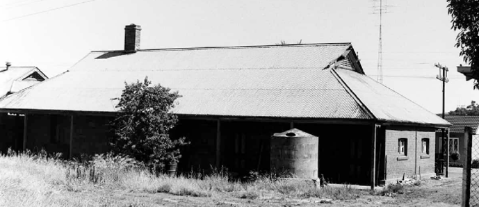
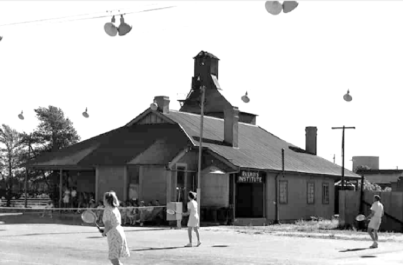
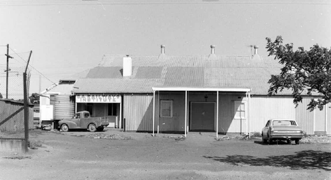
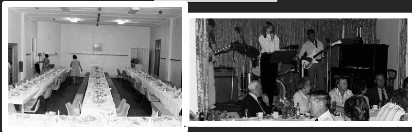

Railway Institute
What began in 1926 as a simple dining hall for railwaymen at the Barracks grew into a thriving social and sporting hub that lasted seventy years. This history walk traces the South Australian Railway Institute from its formation in 1937 through decades of sport, hobbies, dances and community life, right up to its wind-up in 1996 and its new life today as the Peterborough Youth Centre. Discover the clubs, championships and everyday activities that made the Institute a favourite part of town life.
In 1926 Railway Barracks were built in Main Street near the Quorn Crossing. The Barracks were demolished in 1973.
A hall was built on the east side of these Barracks to be used as a dining room for the railway men who resided in the barracks.
In 1937 the dining room was redecorated and furnished by volunteers who hoped that an Institute Branch could be established in Peterborough.
A meeting of railwaymen was held on 15th September 1937, and a branch of the South Australian Railway Institute was formed. The activities of the Institute were centred around education, social and athletics. The building was known as the South Australian Railway Institute hall or SARI Institute hall.
A tennis club had formed and in January 1938 a boxing and wrestling tournament for the Northern Railway Championships were held in the Peterborough Town Hall. In the first year, a cricket club, baseball club and football club had soon been formed, and dances were held Saturday nights to fundraise. Teams representing the SARI Institute also participated in Electric light Cricket, Badminton, and men’s and ladies table tennis.
This building still remains today and is now used by the Peterborough Youth Group.

Railway Barracks 1972
Lionel Noble Collection
The hobbies club met each Tuesday night in its quarters adjoining the hall, and members could be seen busily constructing various kinds of models. The wireless club met on Thursday nights and bridge tournaments were held to raise funds.
A librarian was open from 7 pm to 8 pm on Mondays, Wednesdays and Fridays. Dance classes were held and the Institute had its own horticultural society which met on each 3rd Sunday of the month.
Members of the Institute sporting clubs regularly competed in state and interstate carnivals, and some were selected in the South Australian Institute representative teams. Seven Railway employees were chosen to represent South Australia in the Railway Institute Team which was played in Perth in August 1955. Maurice Buttfield, R. Emes, L. Fleming, Don Fielding, Barry Naughton and Bob Hams were part of the successful SARI team to bring home the Glick trophy and the Australasian Railways Commissioner shield.
In November 1996 the Peterborough branch of ANI (Australian National Institute) formerly SARI wound up after over 50 years. Funds were distributed throughout the town with $3,500 given to the Peterborough Swimming Pool for solar heating. The remaining $4,800 was evened out between the three schools, kindergarten, hospital, Red Cross, Legacy, Town Courts Committee, Salvation Army, St Johns cadets and Peterborough Informer.

Railway Institute – 1960s
Lionel Noble Collection

SA Railway Institute 1971
Lionel Noble Collection

SA Railway Institute 1982
Lionel Noble Collection